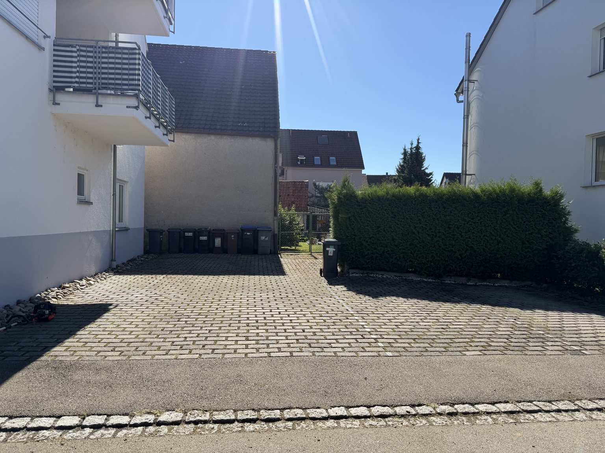
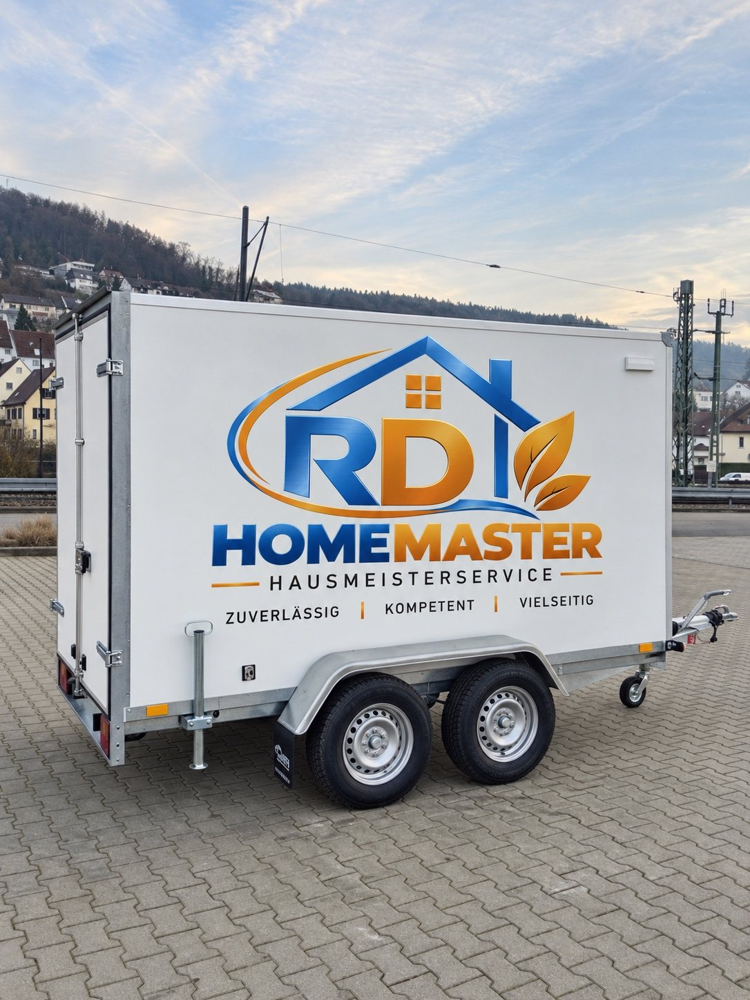
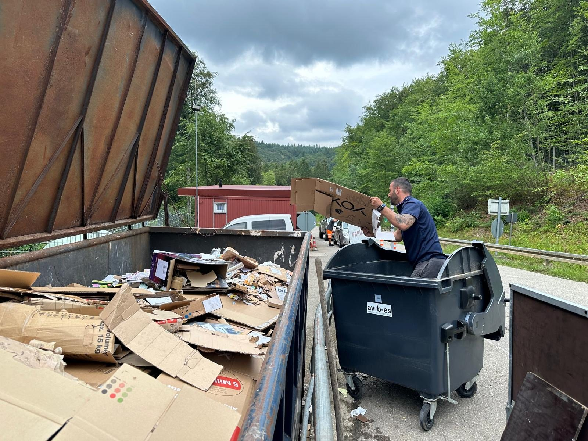

🌿
Garten- & Grünpflege
Rasenmähen, Hecken- und Strauchschnitt, Unkrautentfernung sowie Pflege und Sauberhaltung von Außenanlagen.
HAUSMEISTERSERVICE · LANDKREIS ESSLINGEN
Gartenpflege, Außenreinigung, Hausmeisterservice, Objektkontrolle und Gebäudereinigung – persönlich und vielseitig.
UNSERE LEISTUNGEN
Für private Eigentümer, Hausverwaltungen und Gewerbeobjekte im Landkreis Esslingen.
Rasenmähen, Hecken- und Strauchschnitt, Unkrautentfernung sowie Pflege und Sauberhaltung von Außenanlagen.
Reinigung von Terrassen, Gehwegen, Wegeflächen, Parkplatzflächen und geeigneten Fassaden.
Allgemeine Hausmeistertätigkeiten, Pflege von Immobilien, Reinigung von Briefkastenanlagen und kleinere Arbeiten im zulässigen Rahmen.
Regelmäßige Kontrollgänge, Sichtkontrollen, Feststellung von Schäden oder Auffälligkeiten sowie Meldung festgestellter Mängel.
Treppenhäuser, Eingangsbereiche und Gemeinschaftsflächen – regelmäßig und zuverlässig gepflegt.
EINBLICKE IN UNSERE ARBEIT
Echte Aufnahmen aus unserem Arbeitsalltag.




ÜBER UNS
RD Homemaster ist Ihr Hausmeisterservice aus Oberboihingen für den Landkreis Esslingen. Inhaber Ricardo Dias steht für persönliche Betreuung, zuverlässige Ausführung und einen direkten Ansprechpartner.
Ob regelmäßige Pflege oder einzelne Arbeiten: Wir stimmen die Leistung auf Ihr Objekt und Ihren tatsächlichen Bedarf ab.
KONTAKT
Rufen Sie uns an oder schreiben Sie uns. Wir besprechen Ihren Bedarf und erstellen ein individuelles Angebot.